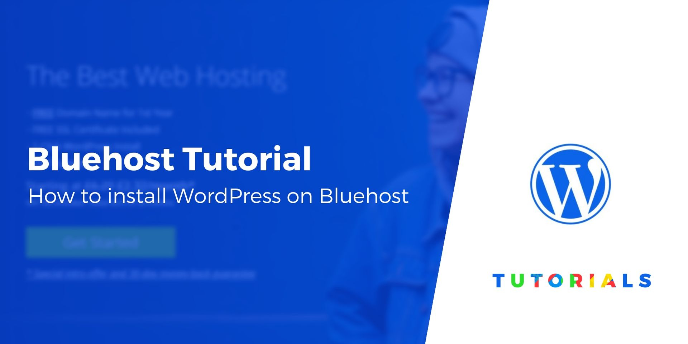
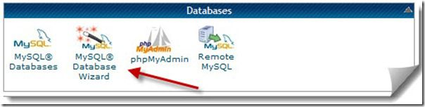
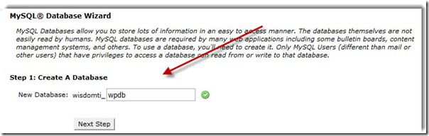
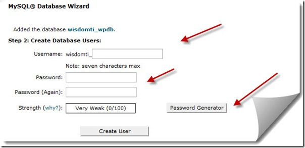
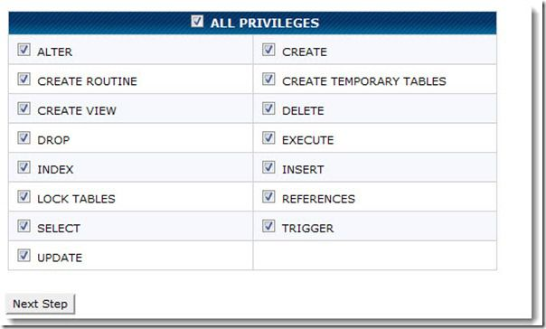

This is a complete beginners guide that will help you to start your blog and do check the bottom section to learn how to use WordPress as well. All these pieces of information are free and feel free to take action and start building something new.

This guide is for newbies to learn how to install WordPress on Bluehost hosting. I have shared exact steps that would help you create your blog using WordPress.
I have used Bluehost for my sites and my client sites, and what I like about them is they don’t oversell themselves. They’re simple, they’re innovating new stuff to make WordPress management easier, and they’re one of the best. Many of you might not be knowing the fact that, Bluehost is one of the officially recommended hosts by WordPress, which is a big deal. One thing I like about Bluehost is that they’ve scaled their server for optimum performance when running WordPress.
They offer unlimited bandwidth, unlimited storage, premium support, and everything else you could possibly need to run a successful WordPress blog. Recently Bluehost made some major improvements in terms of WordPress management and that includes you can use free SSL, WordPress will be auto installed and they made WordPress more secure on their server.
Complete Guide To Create a WordPress Blog on Bluehost
The self-hosted WordPress platform is one of the best platforms to start blogging and making money. We have already shared a complete guide on how to start a new blog, and you can refer to that guide to get started.Bluehost offers a standard cPanel hosting, which comes with Fantastico. Fantastico is one of the easiest ways to install WordPress, or you can use the manual WordPress installation method. Though, I would suggest using Fantastico because it’s really easy and effective.
If you’re still struggling to decide if Bluehost is right for you, I suggest to just go for it. It’s important that any WordPress web host meets certain technical requirements, and Bluehost perfectly meets these needs. It can handle any low-medium traffic site with ease. That said, I always recommend using a WordPress cache plugin when you are using shared/VPS hosting.
Bluehost has completely revamped their web-hosting and made it WordPress oriented. Unlike old times when you had to create your blog manually, these days Bluehost automatically install and setup WordPress for you. If you have followed the above guide and simply purchased hosting + free domain name from Bluehost, it will start installing WordPress for you automatically.
Create Database and Database User:
I believe for non-technical user, this step is the only step where you will be getting little confused. So, follow this step by step guide and screenshot and create your first DB and associate a username and password to it. This is one setting, which we need to change in Wp-config later in this WordPress manual installation tutorial. Almost, all hosting with cPanel offers MySQL database wizard, which makes it easier. Login to your cPanel and click on MySQL database wizard under database, and create a database. Create next step and give a username and password to your newly created database. My suggestion, use password generator there to create a strong and complex password. Once you click on Create user, next step is to give privilege to the users. On the next page, click on all privileges to newly created user and click on next step.




That’s it and you have created a database and username for your new WordPress installation. Make sure, you note down all the details: DB name, DB username and DB password in a notepad, as we will be needing it in next step.